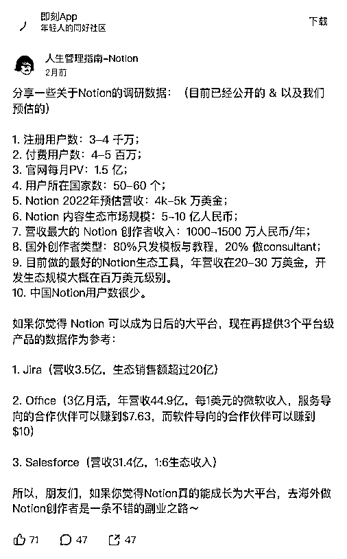
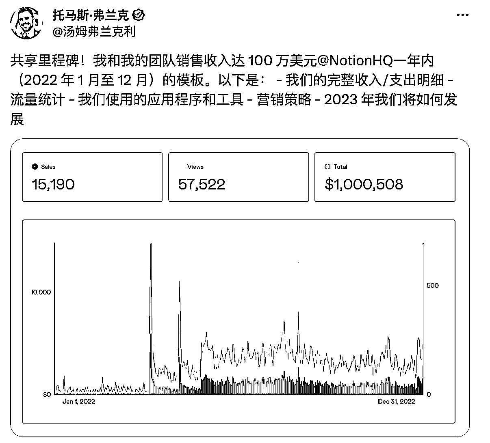
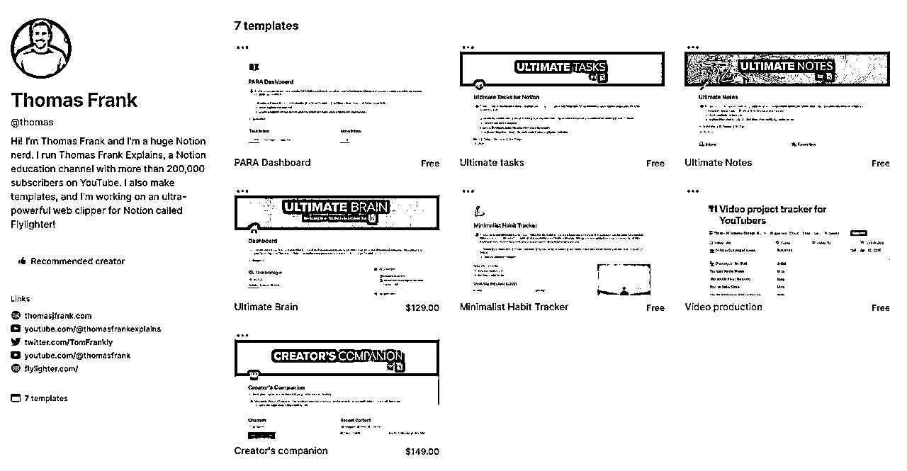
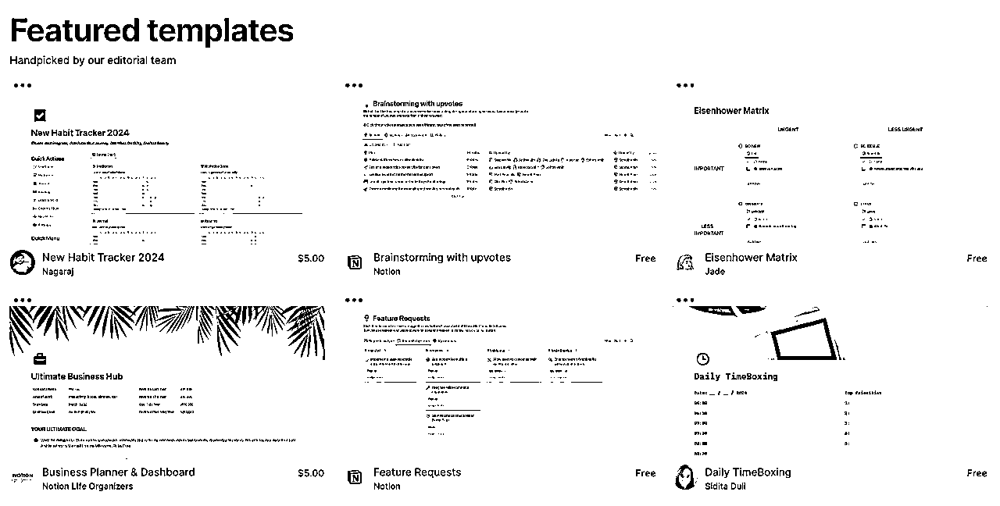
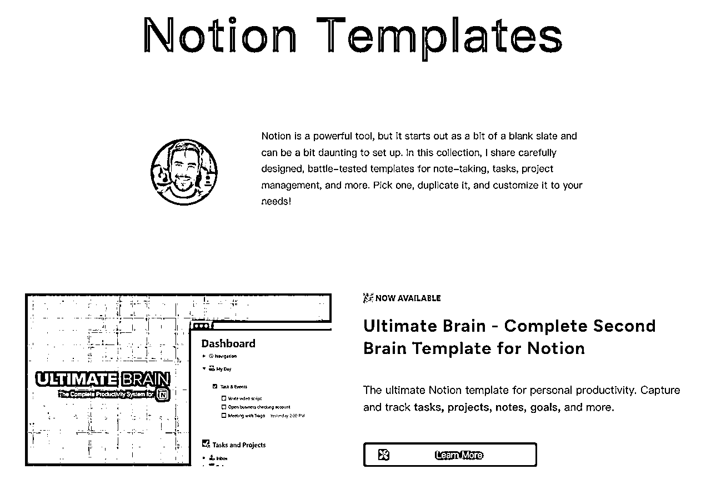
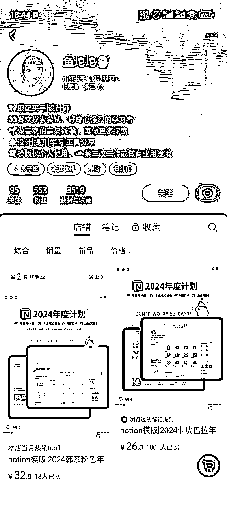
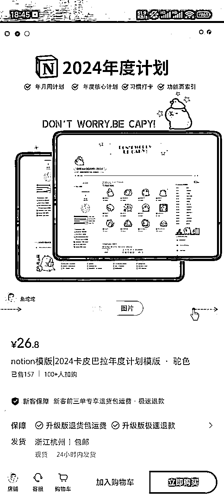

来源：https://ccav9ey9jd.feishu.cn/docx/CKWPdFgG6oW2jjxjxYGcpOXDnzd
生财的球友们大家好，我是一舟，今天来简单拆解下通过卖 Notion 模版年收入 100 万美元的案例，第一次做拆解，还不是很熟悉，如果哪里不当，还希望大家多多指点。
先来简单的介绍一下 Notion。Notion 是一款集成了笔记、知识库、数据表格、看板、日历等多种能力于一体的应用程序，它既可供个人使用，也可以与他人进行跨平台协作。
下面是一些调研数据，数据来源于人生管理指南这个账号：
那么为什么 Notion 做模版能变现呢。这里我自己也有一些思考，Notion 是 All in One 的软件，功能非常强大，其中还包括各种数据表格的组合，对于普通用户来说上手虽然不难，但是精通却异常困难。如果有现成的模版，能省很多的工作量，也能体验到更强大的功能，所以很多用户愿意花钱去买时间。
从调研数据可以看出来，Notion 在海外市场还是非常火热的。在中国 Notion 的用户数量不多，原因是什么呢，我自己也是 Notion 用户，所以大体上也能回答这个问题。Notion 是多端同步，服务器又在海外，所以国内使用网速会受到影响，有的时候打开文档会很慢，不利于一些速记的任务。国内用户大部分都是个人使用，没有协作需求，付费转化低。All in One 的需求在国内不突出，很多人更喜欢使用飞书、语雀等国产软件，使用简单，还能跟社交工具更好地结合。综上所述，我个人认为卖 Notion 模版在海外更有市场。

来看下托马斯·弗兰克的例子，他在 22 年一整年依靠卖 Notion 模版赚了 100W 美元，这也是他一直努力在这个赛道的结果。他从 10 年开始就一直专注在提高工作效率这个赛道上，主营的 Youtube 频道已经超过 290W 订阅者，副营的 Youtube 频道-Thomas Frank Explans 是世界上最大的 Notion 教育频道，拥有超过 17W 名订阅者。

这是他的 Notion 模版主页，可以看到目前需要购买的只有两个模版，定价是 129 刀和 149 刀，其余都是免费的产品。
https://www.notion.so/@thomas

1）模版可以直接上架到 Notion 官方的模版网站 https://www.notion.so/templates，官方会根据模板的质量进行推荐

2）也可以做独立网站，可以参考托马斯·弗兰克的网站 https://thomasjfrank.com/，里面不仅有他的模版，还有 Notion 培训课程等等。

3）在各大平台做 Notion 相关的账号，这里我从小红书也找了一个账号，共发了 13 篇笔记，其中 6 篇还是很早之前发的，也就是说最新发布的 7 篇笔记，变现了 157*26.8=4207 元，收益还是非常客观的。


看了小红书一些 Notion 的商品，目前卖的比较好的包括年度计划、考研计划、手账本、财务规划、知识库模版、旅游计划模版等等。其实卖模版也跟卖资料很相似，有很多模版中也是携带资料的。另外就是一些比较长时间的考试规划，考生也可能会买这种别人规划好的行程表，类似于考研、雅思、托福、日语 N1、教资等等。
那么我们如何获得这些模版呢，其实Notion官方的模版网站有很多免费的模版，已经涵盖了很多方面。或者也可以考虑买同行的模版，修改后进行售卖。
卖模版算是一件利润很高的事情，只要做好了一份模版，后续就是纯收入，也可以对模版进行打包售卖。因为我不太会查看小红书账号是否有投流，所以无法预估投流费用。
以小红书平台举例。
做垂类账号，也就是说只输出Notion相关内容。封面及选题可以参考其他做Notion内容的博主。
一天至少2条图文，可隐秘的做一些引导评论的动作，增高账号权重。
需要开通店铺以及橱窗，找对标账号进行模仿。产品可以选择出售模版整合包，模版质量中等，低价量大，资料中可以夹杂微信号，引流到私域。也可以出售定制化模版，更美观且独一无二，价格略贵。
从上面的分析来看，卖Notion模版是有机会的。单店月利润区间为5K-1W，利润虽然没那么多，但是简单好操作，可重复利用。